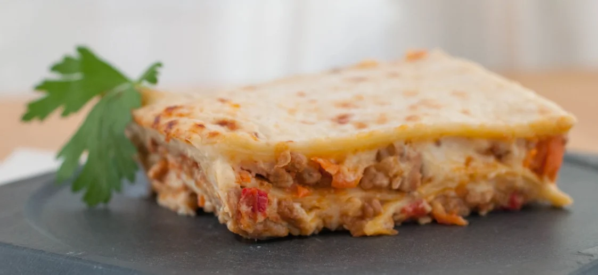

Como prepar una lasagna

Descripcíon
La mejor lasaña es la casera. No sé si os lo comenté alguna vez pero la lasaña es uno de mis platos de pasta preferido. Quizás aprendí a hacer lasaña antes que los canelones por una razón, a mi madre le encanta.
Ella me dejaba preparados todos los ingredientes excepto la salsa bechamel, que la preparaba a su gusto, un poco más cremosa, para casi tomarla con cuchara. Espolvorear con mucho queso y a hornear, cuando llegaba de trabajar tenía la lasaña en su punto, perfecta para comer.
Ingredientes
- Para el relleno (boloñesa de carne): 500 g. de carne (una mezcla de cerdo y ternera)
- 2 zanahorias
- 2 dientes de ajo
- 150 g. de bacon o panceta
- 2 cebollas grandes
- 250 g. de tomate natural (1 vaso aproximadamente)
- 250 ml de vino blanco (200 ml. aproximadamente)
- 100 ml. de aceite de oliva virgen extra
- 1 cucharita colmada de orégano seco (o hierbas provenzales)
- Sal y pimienta negra recién molida (al gusto de cada casa)
- Para la lasaña:
- 12 láminas de lasaña o lasagna Garofalo
- Para hacer la bechamel: (para un litro más o menos, la suficiente para la lasaña): 125 g de harina de trigo de todo uso
- 125 g de mantequilla
- 1 litro de leche entera
- Una pizca de nuez moscada (unos 4 g.)
- Sal y pimienta negra recién molida (al gusto de cada casa)
- Para finalizar y gratinar la lasaña: 100-120 g. de queso rallado Grana Padano (o mezcla con vuestro queso preferido para gratinar)
Pasos
- Calentamos una cazuela grande de agua, la más ancha de casa. Cuando empiece a hervir echamos 2 puñados generosos de sal.
- Introducimos las láminas de lasaña una a una sin que se toquen (para que no se peguen entre ellas). Ahora podemos encontrar infinidad de tipos de lasaña donde no hace hidratarla como se hacía antes. En casa muchas veces para ahorrar tiempo empleo las que se hidratan con la bechamel y el jugo que suelta la salsa al hornear.
- Si lo hacéis de la manera tradicional tenemos que remover con una cuchara de madera y en unos 10 minutos sacamos las láminas. Las estiramos encima de unas hojas de papel absorbente de cocina. Aunque os parezca que no están, acabarán haciéndose en el horno.
- El siguiente paso será lavar muy bien todas las verduras que vamos a emplear en el relleno. En la receta os aconsejo el relleno de la clásica salsa boloñesa, zanahorias, ajo, pimientos y cebolla.